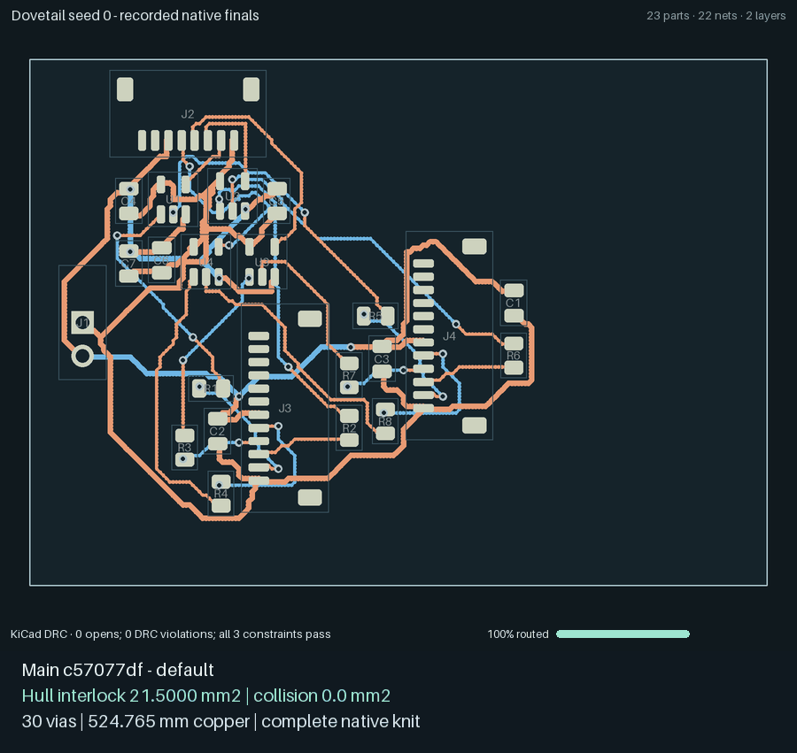
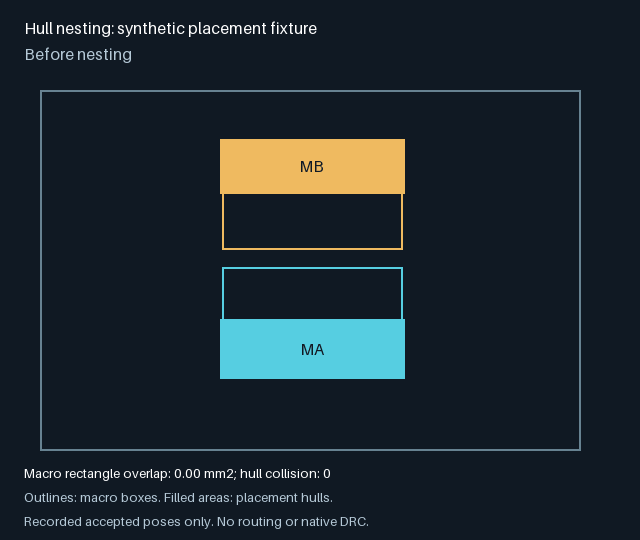

Hull nesting: validation status¶
Nesting is enabled by default for hull macros, by the owner’s explicit decision on
2026-10-07. PNR_HULL_NEST=0, run.py --hull-nest 0, or a ladder campaign’s
hull_nest = false opts out. Plain placements without hull macros are unaffected.
The legality checks, native DRC gates, un-nested knit and rectangle fallback are unchanged.
This default choice does not imply that nesting improves every routing metric.
Matched native example before the default change¶
The integrated head e5332b11625a7158ceb3333bc6ca521452370163 with
--hull-nest 1 was compared with main c57077df3eb59bef496230558f330add15f3d7b0
using case 13-dovetail-blocks-23, seed 0 chosen before either run, the standard full
search budget and automatic seed selection. Both used identical generated inputs and
the same native maze runtime and headless KiCad 10.0.6. Both selected top-03-route.
Final metric |
Main default |
Nesting enabled |
|---|---|---|
Hull interlock (mm²) |
21.5 |
35.3125 |
Hull collision (mm²) |
0 |
0 |
Macro rectangle overlap (mm²) |
82.25 |
126 |
Vias |
30 |
37 |
Copper length (mm) |
524.764992 |
526.062197 |
Both passed native DRC with zero violations and unconnected items, preserved the netlist, completed knitting and satisfied all three constraints. Metrics were recomputed from recorded final macro poses and hull geometry. Main already interlocks; the nesting arm uses seven more vias and slightly more copper. This supplies an actual native-clean interlock example, not a global quality claim or validation of the later default-on head. The final-head versus main campaigns remain pending.

This comparison contains exactly the two recorded native final boards with a fixed viewport and no interpolation. Full logs, boards, traces, DRC results and provenance are preserved separately with the proof.
Campaign receipts¶
The following existing GCP summaries were fetched and checked on 2026-10-07.
They ran source f990b165, before the integration with #88, #90 and #93.
These historical receipts do not validate the default-on head.
Campaign |
Coverage |
Verified result |
|---|---|---|
|
Eight ladder cases, seeds 0–1, base/nest |
16/16 pass in each arm; matching verdicts, opens, vias and copper hashes |
|
35 flat hard cases, seeds 0–1, base/nest |
61/70 pass in each arm; the same nine failures, matching verdicts, opens, vias and copper hashes |
|
Twin-bank, seeds 0–3, base/nest/hp/hpnest |
4/4 pass in every arm; zero final hull collision area |
|
Dovetail, seeds 0–3, four arms |
Still queued, zero run time; missing C4D Spot instance template in |
|
Quad-bank, seeds 0–3, four arms |
Still queued, zero run time; the same missing instance template |
Twin-bank totals over four seeds:
Arm |
Bounding box area (mm²) |
Copper (mm) |
Vias |
|---|---|---|---|
base |
5214.236 |
2130.173 |
164 |
nest |
4083.859 |
2083.441 |
162 |
hp |
5006.464 |
2264.873 |
152 |
hpnest |
4409.349 |
2208.681 |
155 |
The missing dovetail and quad-bank comparisons remain an acceptance gap. The completed cells do not establish that every hierarchical rung is no worse. Replacement jobs require the final tested source and the approved total spending cap.
Animation evidence¶

The committed animation runs the existing half-macro placement fixture
through hull.nest and draws only its recorded accepted poses, with a fixed
viewport. It performs no interpolation, routing or native DRC. It demonstrates
legal macro-box overlap; this simple half-macro fixture is not evidence of
true L-shaped hull interlock. Reproduce it with the engine dependencies and
Pillow 10 or newer:
PYTHONPATH=hardware/pnr:hardware/pnr/tests python tools/animate_hull_nest_fixture.py \
--out docs/feature-animations/hull-nest-fixture.gif
The original local 13-dovetail-blocks-23, seed 1 storyboard was also inspected.
It comes from the recorded run at 03c26c013e3303ce21e1342450deafe098ffe568
with --hull-nest 1 --maze-kernel packed. It is native board evidence, not a
completed GCP A/B.
The recorded final result passed: zero opens, zero native DRC violations, 31 vias, 421.012 mm copper. Final macro rectangle overlap is 8.5625 mm², but hull interlock is 0 mm² (and hull collision is 0 mm²). Therefore this animation does not demonstrate the intended true dovetailing acceptance criterion. It is deliberately not presented as evidence that the missing campaign passed.
Integration checks¶
The focused Bazel targets hull_nest_test, macro_hull_test,
gp_polish_test, hard_rungs_test and tests/unit/exp:test_kinds passed
against the integrated tree. Full CI still needs to pass on the pushed head.